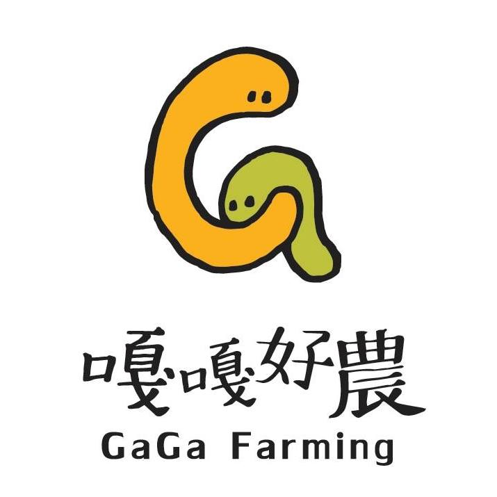

關於我們
About
泰雅族的Gaga為一種相當良好的社會規範，
扮演著法律與道德規範的角色。
好農 / Good Farming
取義為「良好的自然農產」， 達觀部落農業為自然農法耕種， 運用天然的防治蟲害方法和廚餘育肥， 讓土地能擁有持續且良好發展的空間。
It is originally described as "Good Natural Farming". Da-guan tribe's farming methods emphasized on nature and organic, tivated with Natural farming, including using natural ingredients for pest control and kitchen wastes as fertiliser. Utilising “Good nature farming” can make lands of the tribe continually sustainable.
嘎嘎好農 / GaGa Farming
Gaga在達觀人的生活中就像一個如樹狀般、很有系統的架構， 在這良好的社會規範下， 農民們堅持提供有機 、健康、安全又美味農產品， 照顧消費者的健康。
“Gaga” means a very systematic and branch-like social structure. Under the social system, farmers insist on providing organic, healthy, safe and delicious agricultural products to take care of the health of customers.
因此我們將為達觀部落進行推廣設計， 並創建屬於他們的農產業品牌， 建立其綠色農業的品牌形象， 將他們在地的農業以及相關商品， 透過網路平台的方式行銷出去， 使消費者能夠享受天然、健康的農產品， 體會到達觀在地農業的魅力， 讓屬於達觀的風味可以行銷到全世界， 提升競爭力。
Therefore, will carry out a design for promoting Da-guan tribe, create their own agricultural brand and establish a brand image of Green agriculture. Through a web platform, their local agriculture and related goods will be marketing out, so that customers can enjoy the natural, healthy agricultural products and experience the charm of Daguan's agriculture, let the flavour belongs to Da-guan can be marketing to the world, enhance their competitiveness.

嘎嘎好農 GaGa Farming
國立臺中科技大學 商業設計系
106級畢業專題製作
NUTC Department of Commercial Design
2016 Graduation Exhibition
大家好我們是嘎嘎好農！
一個視覺傳達跨數位媒體的設計團隊。
我們的組員來自不同的科系，
並專注在網頁、插畫、印刷等不同的設計領域，
我們相信一個跨領域的合作可以讓世界變得更美好！